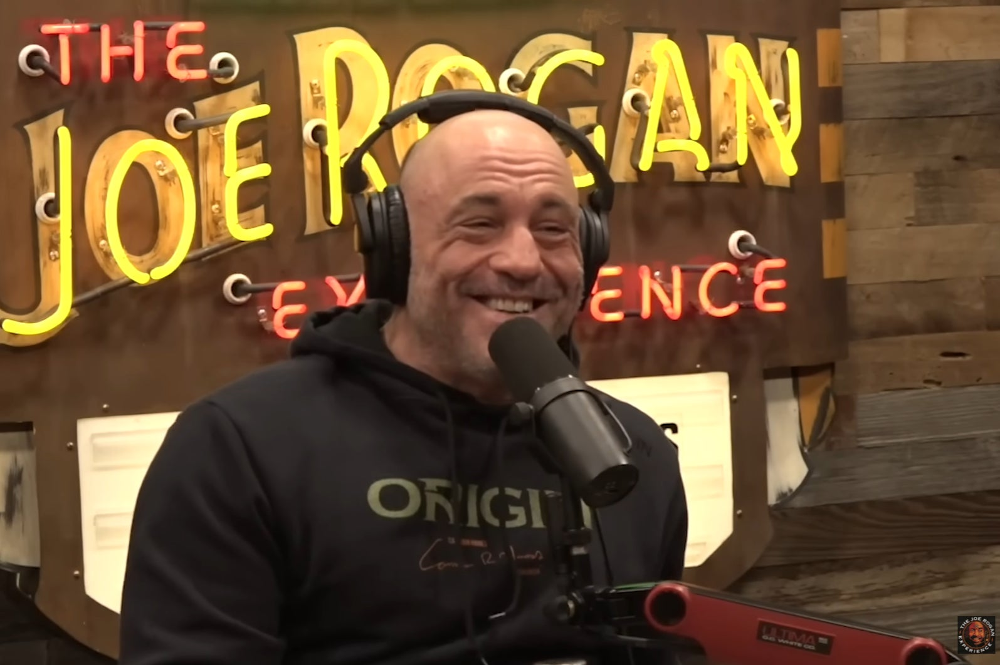
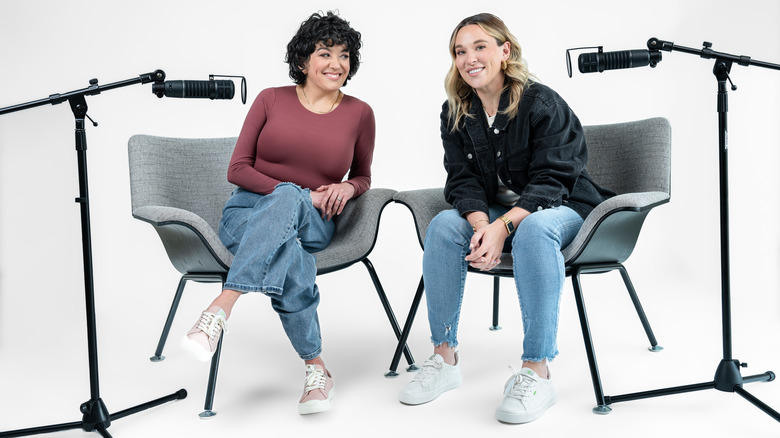
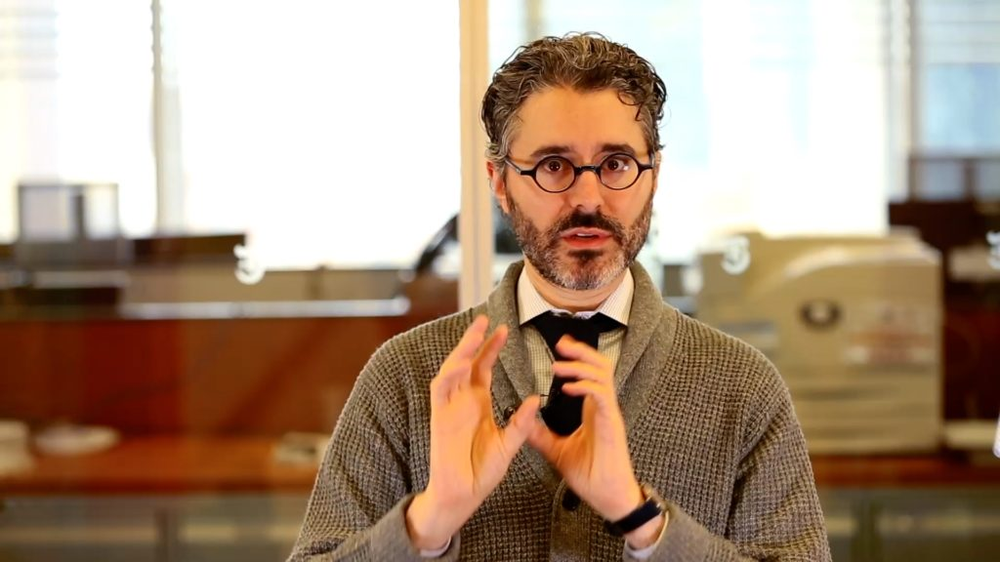
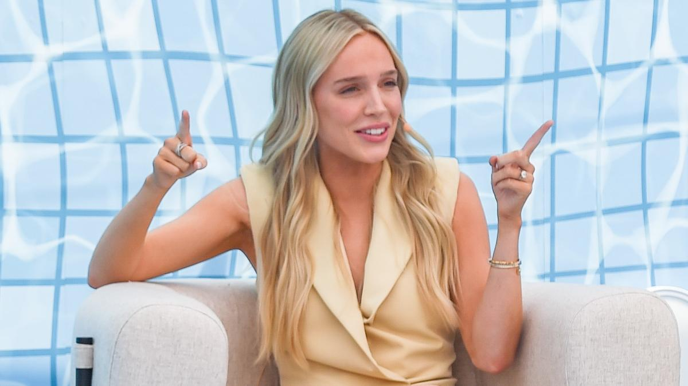
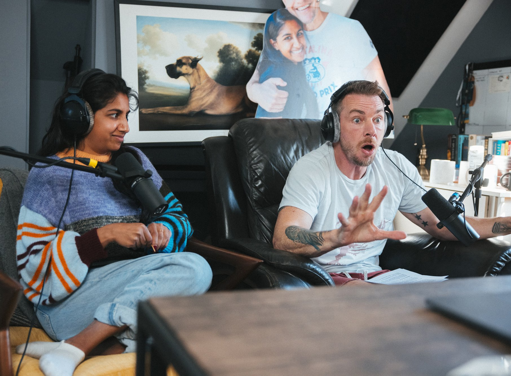
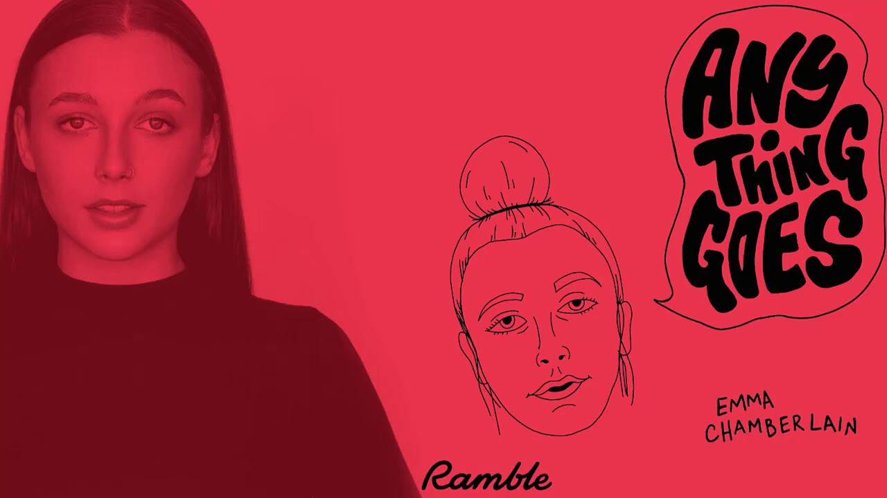
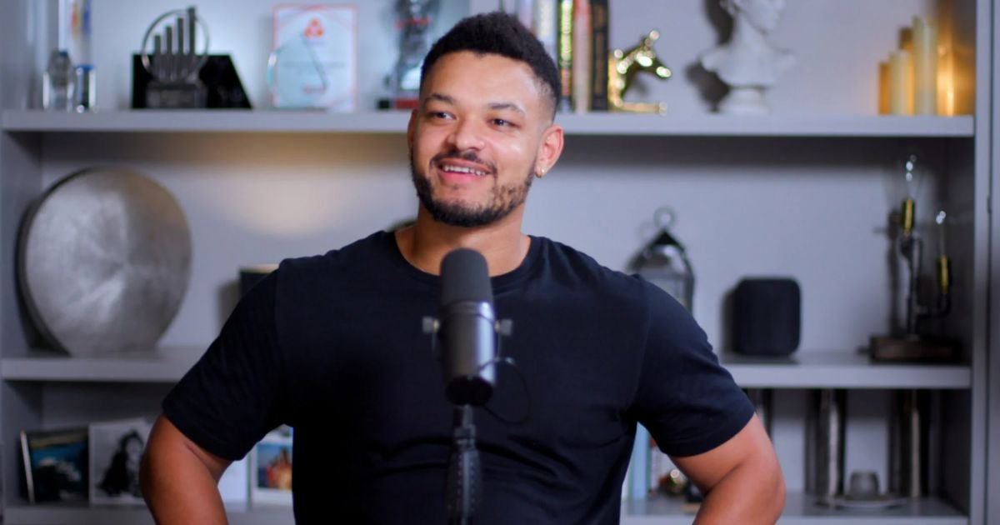
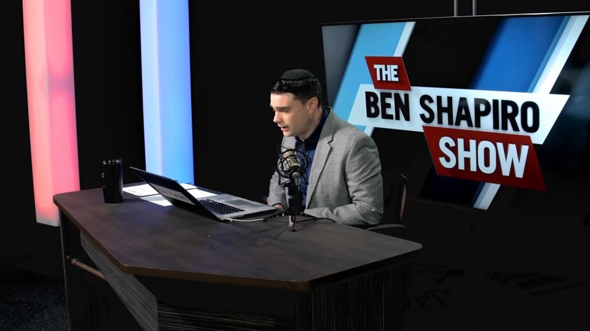
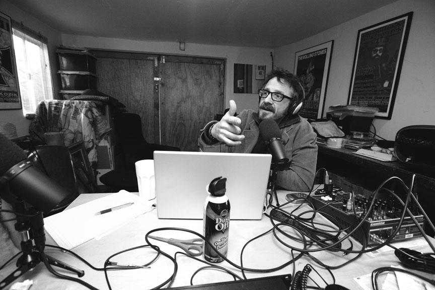
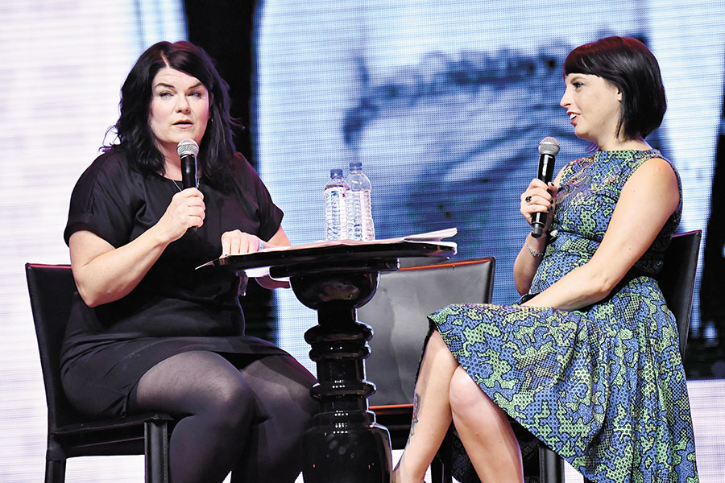

1. The Joe Rogan Experience (JRE)
Host: Joe Rogan
Joseph James Rogan, popularly known as Joe Rogan, is a comedian, UFC commentator, and one of the biggest podcasters on Spotify. He started his podcasting journey in 2009 with "The Joe Rogan Experience." His unfiltered, raw, and unscripted format allows guests to express their thoughts freely, leading to deep and engaging conversations.
His podcast covers long-form interviews with guests from various fields, including scientists, MMA fighters, celebrities, and politicians. In 2020, he signed a $200 million deal with Spotify, making it exclusive to the platform.
Listen to one of his most famous episodes:- Ep #1470 - Elon Musk
2. Crime Junkie
Hosts: Ashley Flowers & Brit Prawat
A true crime podcast launched in 2017, hosted by Ashley Flowers and Brit Prawat. Ashley Flowers is also an author of the New York Times bestselling book "All Good People Here." The podcast became popular due to its in-depth research, chilling narratives, and easy-to-follow storytelling.
Crime Junkie covers both famous and lesser-known cases, making it a diverse listening experience.
Listen to one of its most popular episodes:- Serial Killer: The Butcher Baker
3. The Daily
Host: Michael Barbaro
Michael Barbaro, former political reporter at The Washington Post, joined The New York Times in 2005 and launched "The Daily" in 2017. It quickly became one of the most popular news podcasts.
"The Daily" is a news and current affairs podcast produced by The New York Times, released from Monday to Friday. It provides concise and informative news in 20-30 minutes, featuring expert analysis, interviews, and in-depth coverage.
4. Call Her Daddy
Host: Alex Cooper
"Call Her Daddy" was started by Alex Cooper in 2018 alongside her former co-host Sofia Franklyn. The podcast focuses on feminism, relationships, sex, mental health, trauma, and self-worth.
Alex discusses topics many women hesitate to talk about, making it bold, unfiltered, and raw.
Listen to one of its most popular episodes: The Trauma of Toxic Relationships.
5. Armchair Expert
Host: Dax Shepard & Monica Padman
Armchair Expert is a long-form podcast covering self-improvement and psychology in an interview format. Dax and Monica talk with celebrities, psychologists, and experts about life experiences, struggles, and personal growth. If you're looking for a deep, thought-provoking podcast with a touch of humor, this is for you.
Listen to one of its most popular episodes: Bill Gates Episode
6. Anything Goes
Host: Emma Chamberlain
A solo podcast focusing on life, mental health, and personal growth. Emma shares her personal struggles and growth openly, making it feel like a casual conversation with a friend on everyday lifestyle topics.
Listen to one of its most popular episodes:- Social Media is Ruining My Life
7. The Diary of a CEO
Host: Steven Bartlett
An unfiltered deep dive into success, mental health, and business. Steven interviews CEOs, athletes, and celebrities, covering not just business but personal growth as well.
Listen to one of its most popular episodes: The Mindset of Billionaires
8. The Ben Shapiro Show
Host: Ben Shapiro
A conservative political commentary podcast covering current events, policy debates, and cultural issues. His fast-paced and fact-driven style keeps listeners engaged.
Listen to one of its most popular episodes: The Fall of Woke Corporations
9. WTF with Marc Maron
Host: Marc Maron
A long-form interview podcast where Marc speaks with comedians, celebrities, and cultural icons about their lives, careers, and personal struggles. Deep, honest, and sometimes funny conversations.
Listen to one of its most popular episodes: Louis C.K. Episode
10. My Favourite Murder
Hosts: Karen Kilgariff & Georgia Hardstark
A true crime comedy podcast that discusses gruesome murders, mysteries, and bizarre crimes with dark humor and personal storytelling.
Listen to one of its most popular episodes: JonBenét Ramsey (Episode 52)